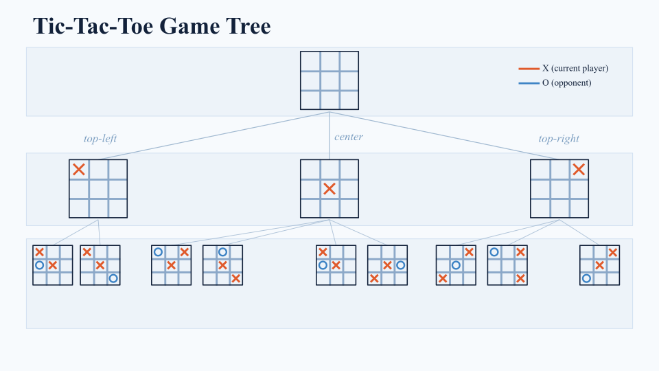
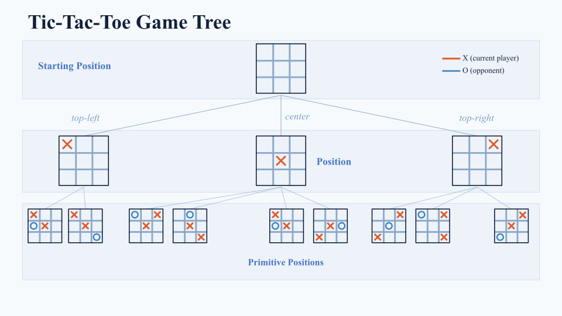
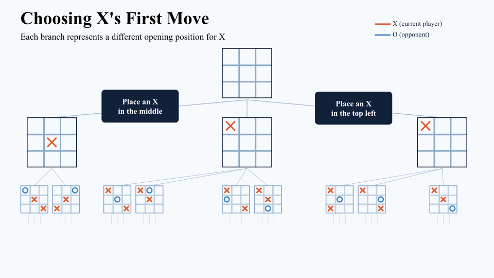

Game Trees
To solve a game, we need to be able to know every possible position and move. This allows us to find winning and losing strategies by exploring all possible outcomes. In this chapter, we'll introduce the concept of game trees, which provide a structured way to visualize and analyze all possible game states and moves.
What Is a Game Tree?
A game tree helps us visualize our game's state space, the set of all possible states and actions. A tree is a connected graph (a collection of points and lines where there is a path between every pair of vertices) with no cycles (loops). In a game tree, the nodes represent the different positions of the game and the edges represent the moves between the different positions. Below is an example of a game tree for Tic-Tac-Toe:

Positions
The various ways we can arrange the pieces on our board are our game states or positions. In the tree, these positions are represented by vertices or the nodes that form the graph. The start position is the starting arrangement of our board is the single node at the top of the tree and is represented by a single source vertex. By definition, we can trace any vertex or position in our tree back to the single source vertex! When we finish playing a game, we can't make any more moves. These terminal or primitive positions live at the bottom of our tree are represented by leaf nodes, nodes with no outgoing arrows.

Moves
The moves the player makes to go from position A to position B is represented by an edge connection between vertex A and vertex B. Even though edges can represent movement in both directions, the edges for games are one-way arrows to represent the forward motion of time as we go from one game position to the next. This is why game trees are directed graphs, or graphs with edges that point in a specific direction.

Putting this all together, we get our game tree! We are able to represent the state space (the game's set of all possible states and actions) as a directed Graph G = (P, M), where P is the set of positions (vertices) and M is the set of moves (edges) in a game.
Summary
- The nodes are all the possible positions of the game.
- The single source vertex is the first node in our tree and the game's initial position.
- The leaf nodes are the terminal states or the states from which we can no longer make a move (ex. win, lose, tie).
- The edges are all the possible moves from one game state to the next. We make a move in the direction of the arrow.
Solving a Game
Now that we have a way to represent all the possible positions and moves in our game, we can use this structure to analyze and solve the game. In the next chapter, we will explore how to assign values to each position in the game tree, which will help us determine the best strategies for winning the game.
Practice Questions
Test your understanding of game trees with the questions below. Click an answer to check it.